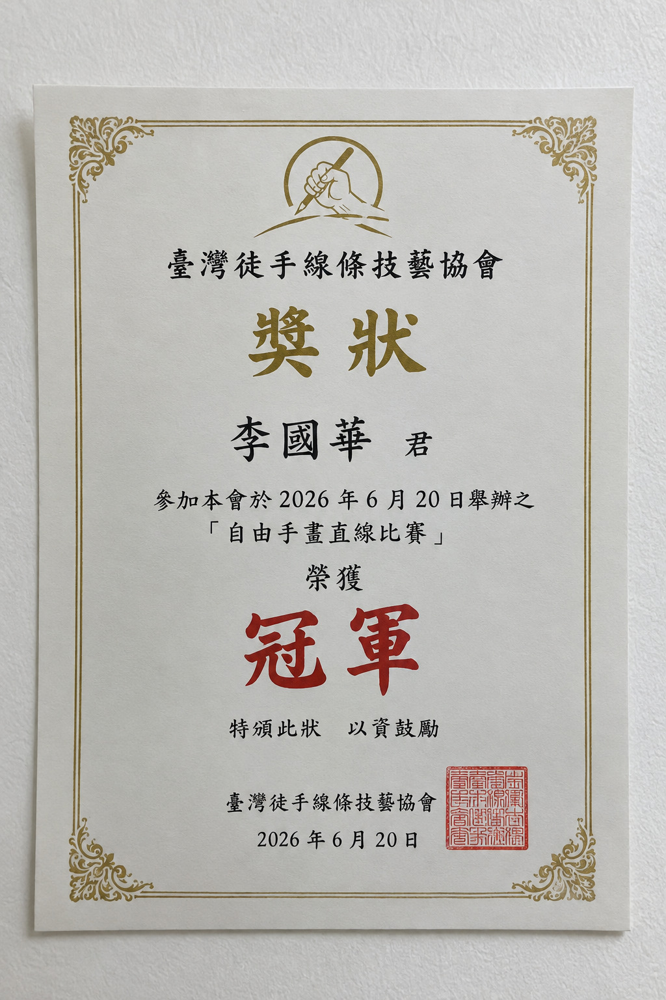

我拿到 2026 自由手畫直線比賽冠軍了
先說結果：6 月 20 日的 2026 自由手畫直線比賽，我拿到了冠軍。隔了一個禮拜才寫這篇。
比賽當天
比賽在台中一個社區活動中心舉行，共有 48 位參賽者。比賽方式是在拼接好的 100 公分長紙上畫一條直線，不能用尺、不能用任何標記。主辦單位用掃描方式量測每條線與理想直線之間的最大偏差。
我畫的時候想的就是前幾個月練的那幾件事：用手臂帶，眼睛看終點，中間不停。畫完之後手有點發抖，我以為自己偏很多。
成績
結果公布時我的最大偏差是 0.8 公釐，是所有參賽者中最小的。第二名是 1.3 公釐。
獎狀

獎狀我裝了框，掛在書桌旁邊的牆上，位置就是以前掛那幅字的地方。阿墨每天經過都會看一眼，我猜牠只是在看有沒有掉下來。
謝謝朋友報名時推了我一把。永字還沒寫完，接下來繼續練。